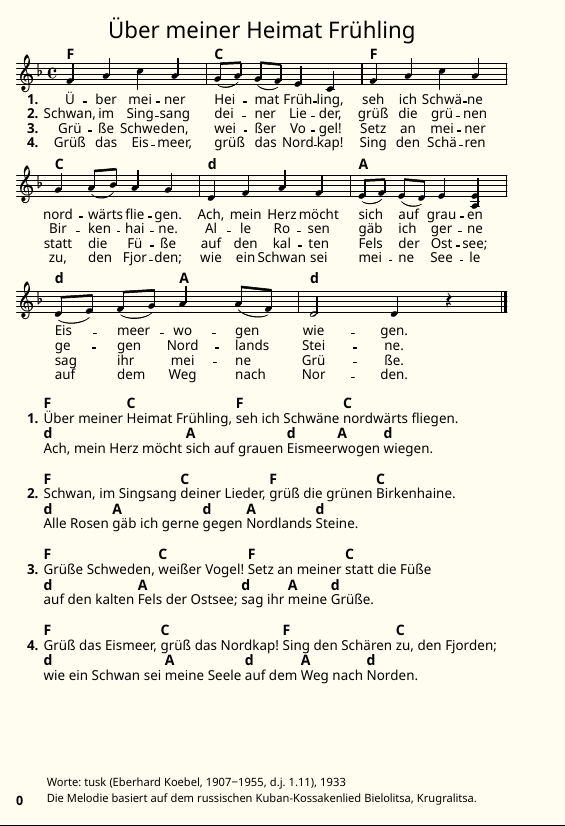

Beispiel Liedersetzen
Damit du möglichst einfach unser System lernst, haben wir dir ein Lied rausgesucht, das wir nun zusammen setzen. Dabei gehen wir davon aus, dass du das Lied erstmal für unseren Liederpool setzt (auch wenn das Beispiel da natürlich schon drin ist). Alles weitere an späterer Stelle.
Die Vorlagendatei für den Liederpool sieht so aus:
\version "2.25.8"
\include "../../lilypond-common-includes/snippet_include.ly"
%midiQuarterNoteSpeed =
basicSongInfo = \header {
title = "Titel"
starttext = "Liedanfang"
alttitle = "Alternativtitle"
authors = #'(
(""))
year_text = ""
year_melody = ""
infotext = ""
source = ""
}
global = {
%Takt
\time 4/4
%Tonart
\key c \major
}
firstVerse = \lyricmode {
#(stanza 1)
Ly -- rics
}
refLyrics = \lyricmode {
\ref
Ly -- rics
}
firstVoice = \relative c' {
c
}
refVoice = \relative c' {
c
}
melodyVoice = \relative c' {
\global
\firstVoice
\refVoice
\bar "|."
}
verseChords = \chordmode {
c
}
refChords = \chordmode {
c
}
songChords = \chords {
\verseChords \refChords
}
MUSIC = {
<<
\songChords
\new ChoirStaff = "firstStaff"
<<
\new Voice = "firstVoice" { \melodyVoice }
\addlyrics { \firstVerse \refLyrics }
>>
>>
}
%Vorlage für ungerade Lieder. Wenn nicht benötigt, bitte löschen!
%{
music = {
<<
\songChords
\new ChoirStaff = "firstStaff"
<<
\new Voice = "firstVoice" { \melodyVoice }
\addlyrics { \firstVerse \refLyrics }
\addlyrics { \tag #'multiVerse \secondVerse }
>>
>>
}
MUSIC = {
\keepWithTag #'firstVerse
\keepWithTag #'multiVerse
\music
}
verse-chords = \chords { \keepWithTag #'multiVerse \verseChords }
verse-voice = { \global \keepWithTag #'multiVerse \firstVoice }
%}
verse-breaks = {
s1 \break
}
TEXT = \markuplist {
%\override #`(verse-chords . ,verse-chords)
%\override #`(verse-reference-voice . ,verse-voice)
\override #`(verse-break-voice . ,verse-breaks)
\group-verses {
\chordlyrics \firstVerse
}
}
\include "../../lilypond-common-includes/default_output.ly"Durch die werden wir uns jetzt Stück für Stück durcharbeiten.

Wundere dich nicht, dass sich gar nichts verändert, gar keine Noten oder Sonstiges entstehen, wenn du in der Datei schreibst. Das ist normal, denn die werden immer nur aktualisiert, wenn du „kompilierst“, also die Datei ausführst. Das machst du, in dem du auf die Seerose in der oberen Werkzeugleiste klickst oder mit der Tastenkombination Strg + M.
Abspeichern der Lieddatei
Als erstes speicherst du dir die Vorlagendatei neu ab. Dazu drückst du Strg + Umschalt + S oder wählst im Menü Datei -> Save -> Speichern unter. Dort bleibst du im selben Ordner, also im Ordner liedbausteine und speicherst die Datei im Schema lied_anfang_(lied_titel).ly ab. In unserem Falle wäre das also ueber_meiner_heimat_fruehling.ly. Wie du siehst, vermeiden wir Umlaute. Für ein anderes Lied, bei dem Titel und Liedanfang nicht identisch sind, sähe das dann zum Beispiel so aus: im_kreis_ihrer_enkel_(drei_rote_pfiffe).ly.
Die Metadaten zum Lied
Nun wenden wir uns dem Inhalt zu. Im ersten Teil findest die Metadaten zum Lied.
%midiQuarterNoteSpeed =
basicSongInfo = \header {
title = "Titel"
starttext = "Liedanfang"
alttitle = "Alternativtitle"
authors = #'(
(""))
year_text = ""
year_melody = ""
infotext = ""
source = ""
}Geschwindigkeit
Die erste Zeile ist die Geschwindigkeit in Beats per Minute (bpm) auf Viertel gerechnet. Das beeinflusst zum Beispiel die MIDI-Ausgabe. Da wir nicht wissen, wie schnell „Über meiner Heimat Frühling“ gespielt gehört (weil alle das unterschiedlich singen und wir keinen Zugriff auf ein Original haben), lassen wir das einfach auskommentiert.
Auskommentieren bedeutet, dass der Code, der auskommentiert wurde, nicht ausgeführt wird, also zu keinem Output führt. Man könnte auch sagen, er ist in dem Moment irrelevant.
Auskommentieren in LilyPond funktioniert mit dem Prozentzeichen %. Das gilt dann immer für alles, was danach kommt in der jeweiligen Zeile. Beispiel:
nicht auskommentiert % auskommentiert
nicht auskommentiertMan kann auch über mehrere Zeilen hinweg auskommentieren. Das sähe dann so aus:
nicht auskommentiert %{ auskommentiert
auskommentiert
auskommentiert %} nicht auskommentiertTitel
Als title geben wir den Titel des Liedes an, also title = "Über meiner Heimat Frühling". Mit starttext erfassen wir den Liedanfang, sofern er sich vom Titel unterscheidet. Das ist wichtig für das Inhaltsverzeichnis des zukünftigen Liederbuchs. Mit alttitle erfassen wir mögliche alternative Titel. Manche kennen das Lied beispielsweise auch unter „Tusks Lied“ und würden es unter diesem Namen im Inhaltsverzeichnis suchen. Deswegen schreiben wir alttitle = "Tusks Lied". Es gibt sechs verschiedene mögliche Alternativtitel. Für weitere einfach ein alt vorne dranhängen, z.B. altalttitle, altaltalttitle und so weiter.
Autor*innen
Unter authors werden die Autor*innen des Liedes erfasst. Dazu gibt es einiges zu sagen. Wir erfassen die Autor*innen in einem separaten Dokument, das unter dem Pfad lilypond-song-includes/data/authors.yml in deinem Repo zu finden ist. Ausführlich ist das in unserer Doku erklärt. Kurz gesagt, nutzen wir in der LilyPond-Datei eine Autor*innen-ID, die jede*n Autor*in eindeutig identifiziert und speichern die Informationen in einer YAML-Datei. Das hat den Vorteil, dass Fehler nur an einer Stelle korrigiert werden müssen und es mehr Einheitlichkeit gibt. Was in der LilyPond-Datei alles angezeigt wird, ist natürlich veränderbar. Die IDs sind in der Regel der Fahrtennahme, zum Beispiel tusk, oder der Name nach dem Schema VornameNachname zum Beispiel JohannWolfgangvonGoethe. Dabei verwenden wir keine Umlaute. In unserer YAML-Datei gibt es den Eintrag tusk schon, das heißt, wir müssen nur eintragen:
authors = #'(
("tusk" text))Tusk hat den Text zu diesem Lied gemacht, deswegen schreiben wir text, die Melodie basiert auf einem Kossakenlied. Diese Information schreiben wir in den infotext. Normalerweise, bei eindeutigen Autor*innen wird die natürlich auch wie oben erfasst.
Schaffensjahr
Der Text entstand 1933, wir schreiben also year_text = "1933", das Jahr der Melodie ist unbekannt, deswegen lassen wir das frei year_melody = "".
Informationen zum Lied
Hier können Informationen zum Lied erfasst werden, zum Beispiel wie in unserem Fall: infotext = "Die Melodie basiert auf dem russischen Kuban-Kossakenlied Bielolitsa, Krugralitsa.".
Quelle
Äußerst wichtig, um auch in zehn Jahren noch ungefähr nachvollziehen zu können, woher Notensatz und Co. herkamen, ist die Quellenangabe. In diesem Falle beziehen wir uns auf den Codex Patomomomensis. Deswegen schreiben wir: source = "Codex".
global-Variable
global = {
%Takt
\time 4/4
%Tonart
\key c \major
}In dieser Variable erfassen wir generelle musikalische Informationen zum Lied. Das sind:
Taktart
…die wir mit \time 4/4 angeben. Und…
Wie du dir vielleicht schon gedacht hast, würde ein 6/8-Takt dann so aussehen: \time 6/8. Probier es doch mal aus!
Tonart
…die wir mit \key d \minor angeben.
Auch hier ist die Funktion recht gut erschließbar. Auf \key folgt der Grundton (Achtung, immer Kleinbuchstaben) und dann die Option Dur (\major) und Moll (\minor).
firstVerse-Variable
firstVerse = \lyricmode {
#(stanza 1)
Ly -- rics
}Lyrics / Liedtext
Da kannst du jetzt an die Stelle, wo gerade der Platzhalter Ly -- rics steht, den Liedtext des Liedes reintippen oder -kopieren. Als nächstes müssen die (gesungenen) Silben mit zwei Minus-Zeichen getrennt werden. Aus „Über“ wird dann Ü -- ber und aus „Heimat“ Hei -- mat und immer so weiter. Zum Glück gibt es ein hilfreiches Tool in Frescobaldi, wenn du im Menü auf Werkzeuge -> Musical Transformations -> Liedtext -> Trennungsstriche in Text einfügen klickst – oder kurz Strg + L (vorher musst du den zu trennenden Text auswählen). Im Dialogfenster wählst du die Sprache aus und Frescobaldi macht das dann für dich. Wichtig ist, dass du nochmal drüber schaust, denn ganz fehlerfrei funktioniert die automatische Silbentrennung leider nicht.
refLyrics-Variable
Diese Variable ist für den Text des Refrains vorgesehen – aber den gibt es bei diesem Lied gar nicht. Deswegen kann die gelöscht werden.
Weitere Verse-Variablen
Da wir ja noch vier weitere Strophen haben, müssen wir uns noch ein paar weitere Variablen erstellen, in die deren Text reinkommt. Das passiert nach dem gleichen Schema wie für den firstVerse, nur dass wir die Zahlen jeweils anpassen, also:
secondVerse = \lyricmode {
#(stanza 2)
Ly -- rics
}
thirdVerse = \lyricmode {
#(stanza 3)
Ly -- rics
}
fourthVerse = \lyricmode {
#(stanza 4)
Ly -- rics
}Da, wo jetzt noch Ly -- rics steht, muss natürlich der Liedtext hin.
firstVoice-Variable
Jetzt geht’s ans Eingemachte, nämlich die Noten! Da, wo jetzt noch das c steht, schreibst du die Noten des Liedes rein – für jeden Takt eine Zeile. Das sieht für den ersten Takt so aus:
firstVoice = \relative c' {
f4 a c a
}Notenbezeichnungen und Notenwerte
Die Kleinbuchstaben sind jeweils die deutschen Notenbezeichnungen. Die darauffolgende Zahl ist die Notenlänge. f4 bedeutet also, dass das f eine Viertelnote ist. Bei einer Halben Noten würde man f2 schreiben, bei einer Ganzen f1, bei einer Achtel f8 und so weiter. Hat die darauffolgende Note denselben Notenwert, muss der nicht nochmal dazugeschrieben werden. f4 a bedeutet also eine Viertelnote f und eine Viertelnote a.
Legato-Bogen
firstVoice = \relative c' {
f4 a c a
g8 (a) g (f) e4 c
}Schauen wir uns den zweiten Takt an, stellen wir fest, dass da auch Klammern drin zu finden sind. Auf diese Weise werden Legato-Bögen markiert. Im obigen Beispiel heißt g8 (a), dass vom g zum a gebunden wird. Bei mehr Tönen könnte das dann so aussehen: g8 (a g). Der Legato-Bogen geht hier vom g zum g.
Parallele Töne und Tonhöhen
firstVoice = \relative c' {
f4 a c a
g8 (a) g (f) e4 c
f a c a
g a8 (b) a4 g
d f a f
e8 (f) e (d) e4 <e a,>
}Wenn zwei Töne gleichzeitig erklingen sollen (und es sich nicht um eine ganze Stimme handelt), werden beide Töne von Krokodilsklammern gerahmt: <e a,> bedeutet, dass das e und das a gleichzeitig (also übereinander) notiert werden.
Tonhöhen anzugeben, ist meist gar nicht notwendig, da LilyPond von den naheliegensten Tönen ausgeht. Bei e f geht LilyPond also davon aus, dass der Tonsprung nach oben stattfindet, weil der „Weg“ kürzer ist als nach unten (zum tiefen f). Bei größeren Tonsprüngen helfen die Zeichen ' (englisches Apostroph) für eine Oktave nach oben und , (Komma) für eine Oktave nach unten. Bei zwei Oktaven natürlich dann zweimal und so weiter.
Pausen
firstVoice = \relative c' {
f4 a c a
g8 (a) g (f) e4 c
f a c a
g a8 (b) a4 g
d f a f
e8 (f) e (d) e4 <e a,>
d8 (e) f (g) a4 a8 (f)
d2 d4 r
}Zuletzt benötigen wir noch eine Pause zum Abschluss. Pausen werden mit r (engl. rest = Pause) bezeichnet. Die Angabe des Pausenwertes erfolgt analog zu den Notenwerten.
refVoice-Variable
Die brauchen wir nicht, denn wir haben keinen Refrain. Sie kann einfach gelöscht werden.
melodyVoice-Variable
melodyVoice = \relative c' {
\global
\firstVoice
\refVoice
\bar "|."
}In dieser Variable bauen wir die Melodiestimme zusammen. Dazu müssen wir die Zeile mit \refVoice löschen, da wir keinen Refrain haben. Wie du siehst, fügen wir da also die oben definierten Variablen ein (\global und \firstVoice) und ergänzen noch einen Schlussstrich (\bar "|.", bar = engl. für Taktstrich).
verseChords-Variable
verseChords = \chordmode {
c
}Akkorde
In diese Variable fügen wir anstatt des Platzhalters c unsere Akkorde ein. Akkorde funktionieren sehr ähnlich wie Noten. Für dieses Lied brauchen wir Dur- und Moll-Akkorde. Dur-Akkorde sind sehr einfach (f), Mollakkorde eigentlich auch (f:m). Die Länge funktioniert wie bei den Noten und Pausen auch.
verseChords = \chordmode {
f1 c f c d:m a d2:m a d1:m
}In unserem Lied wird also ein F-Dur einen Takt lang gesetzt, danach folgt einen Takt C-Dur, dann wieder F-Dur, C-Dur, dann D-Moll, dann A-Dur. Danach folgt zwei Schläge D-Moll, A-Dur und wieder vier Schläge D-Moll.
refChords-Variable
Da wir keinen Refrain haben, kannst du diese Variable einfach löschen.
songChords-Variable
songChords = \chords {
\verseChords \refChords
}Die \refChords musst du rauslöschen, da wir die ja nicht haben. Ansonsten werden hier einfach nur die Akkorde zusammengesetzt.
Der MUSIC-Teil
MUSIC = {
<<
\songChords
\new ChoirStaff = "firstStaff"
<<
\new Voice = "firstVoice" { \melodyVoice }
\addlyrics { \firstVerse \refLyrics }
>>
>>
}Hier wird unser Lied „zusammengebaut“. Wie du siehst, werden die Akkorde eingebunden (songChords), die Melodiestimme (melodyVoice) und der Liedtext (firstVerse). Bei dem musst du noch die \refLyrics löschen, da die in unserem Falle nicht vorkommen.
Für unser System ist es nun notwendig, dass der Text für alle Strophen an der korrekten Stelle unter den Noten steht. Deswegen musst du nun für jede der Text-Variablen (secondVerse, thirdVerse, fourthVerse) eine addlyrics-Zeile einfügen, das sieht dann so aus:
MUSIC = {
<<
\songChords
\new ChoirStaff = "firstStaff"
<<
\new Voice = "firstVoice" { \melodyVoice }
\addlyrics { \firstVerse }
\addlyrics { \secondVerse }
\addlyrics { \thirdVerse }
\addlyrics { \fourthVerse }
>>
>>
}Jetzt kannst du auf jeden Fall schonmal kompilieren, also auf die Seerose klicken oder Strg + M drücken und schauen, was passiert. Wenn alles klappt, müsstest du jetzt das Liedblatt fast fertig vor dir sehen.
Überprüfe einmal, ob der Text sich immer an der richtigen Stelle unter den Noten befindet.
Der TEXT-Teil
verse-breaks = {
s1 \break
}
TEXT = \markuplist {
\override #`(verse-break-voice . ,verse-breaks)
\group-verses {
\chordlyrics \firstVerse
}
}Den auskommentierten Teil kannst du löschen, wir brauchen ihn für dieses Lied nicht. Hast du das gemacht, haben wir oben zu sehenden Code. Was da im Hintergrund passiert, ist, dass eine unsichtbare Stimme und Akkorde erzeugt werden (firstVoice und songChords), zu der die Text-Variablen zugeordnet werden. Die Umbrüche erfolgen dann mit der Variable verse-breaks (oben im Code). Was du jetzt machen musst: Die Takte zählen, bei denen du umbrechen möchtest. Dabei ist es sinnvoll, sich an der Versstruktur zu orientieren. Wir wollen also immer nach zwei Takten umbrechen. Dafür schreiben wir:
verse-breaks = {
s1 s \break
s s \break
s s \break
s s \break
}Das s steht quasi für „aussetzen“. Wenn du jetzt kompilierst, solltest du schon ein gutes Resultat sehen.
Zuletzt ergänzen wir noch die anderen Strophen nach demselben Schema, das bedeutet:
TEXT = \markuplist {
\override #`(verse-break-voice . ,verse-breaks)
\group-verses {
\chordlyrics \firstVerse
\chordlyrics \secondVerse
\chordlyrics \thirdVerse
\chordlyrics \fourthVerse
}
}Und fertig ist dein erstes Liederpool-Lied!
Das muss noch gar nicht schön aussehen, denn das kommt an anderer Stelle…